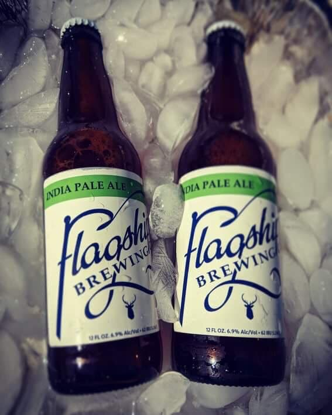

What they say: A showcase of some of flagships favorite varieties and executed by using them in. Each hop in IPA lends a unique flavor that when blended and produces bursting fruit flavors from citrusy grapefruit to tropical mango in harmony with an ever so slight roast character from the golden malted barley. Designed for full hop flavor experience without overpowering bitterness.
What Nick Says: Like most IPA's, this is just as bitter. It has a nice orange and gold color that reminds me of summer! It also has a nice fruity aromas and aftertaste. You can find it on certain spots in Staten Island but good luck finding it in the other boroughs.